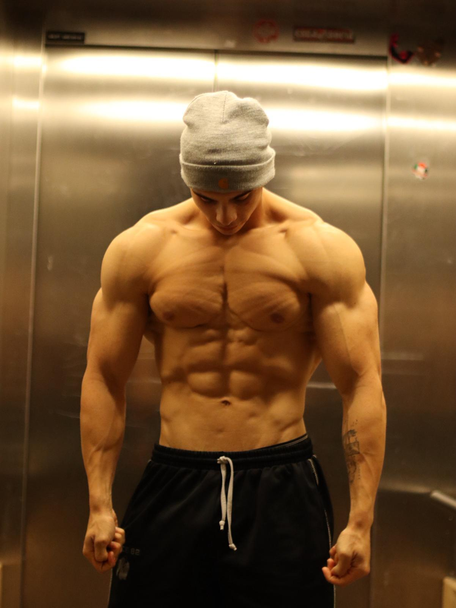
Tudo começa antes da ação. O planeamento minucioso de cada detalhe garante que não há espaço para a sorte, apenas para a execução perfeita.
O alto rendimento exige dados. Analisar cada número, cada resposta do corpo ao stress. A tecnologia e a ciência ao serviço da máquina humana.
A concentração absoluta no objetivo. Eliminar distrações externas e visualizar a performance ideal vezes sem conta.
Acreditar antes de acontecer. A preparação mental é tão rigorosa quanto a física. O lugar mais alto do pódio começa aqui.
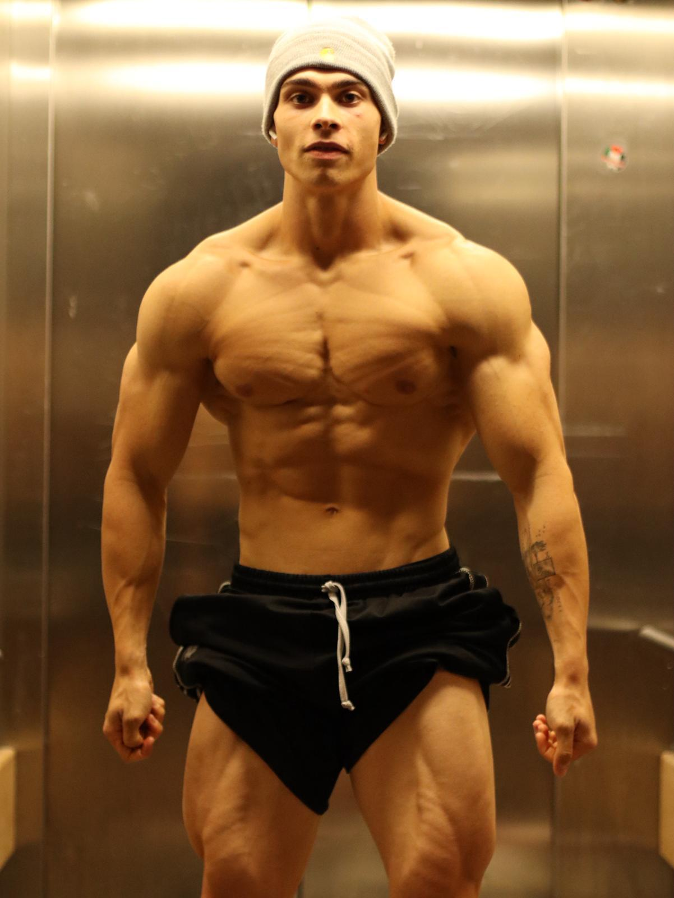
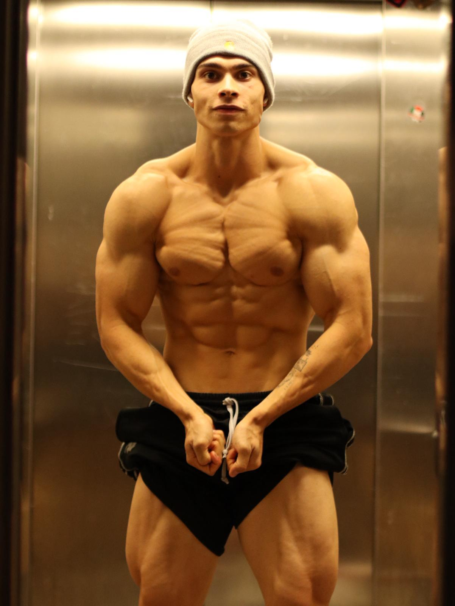
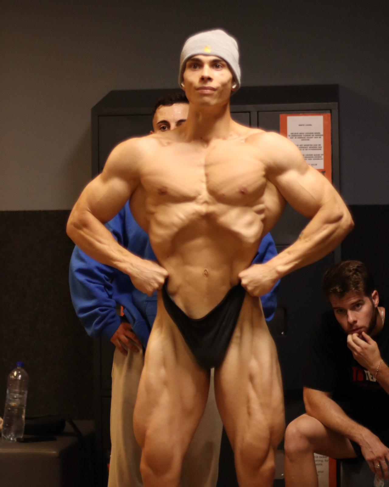
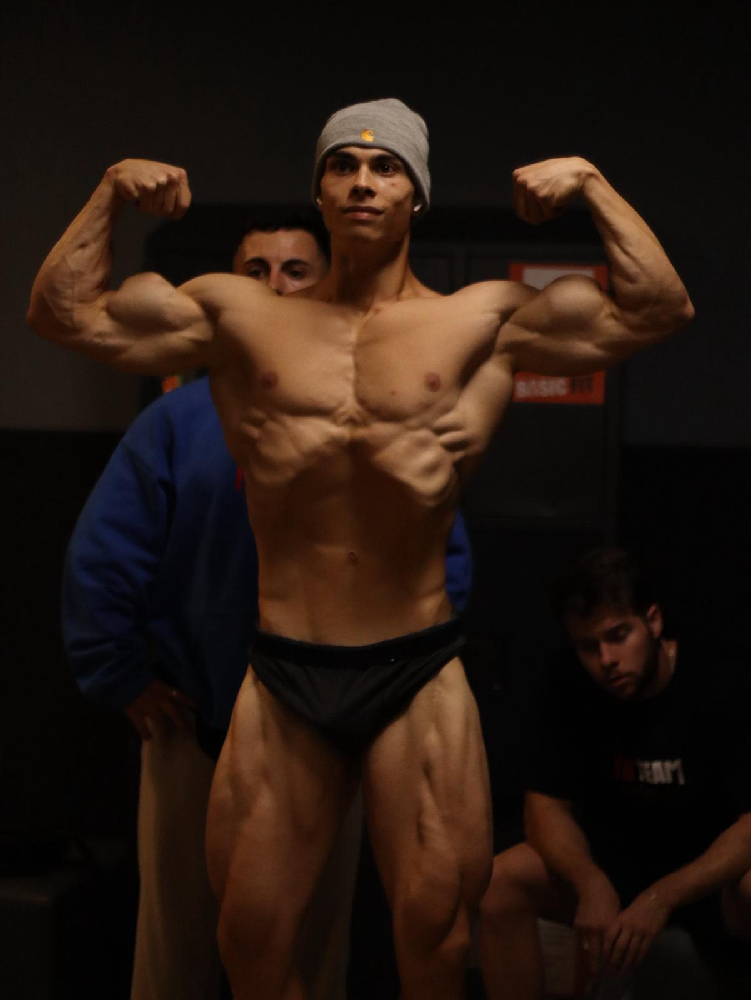
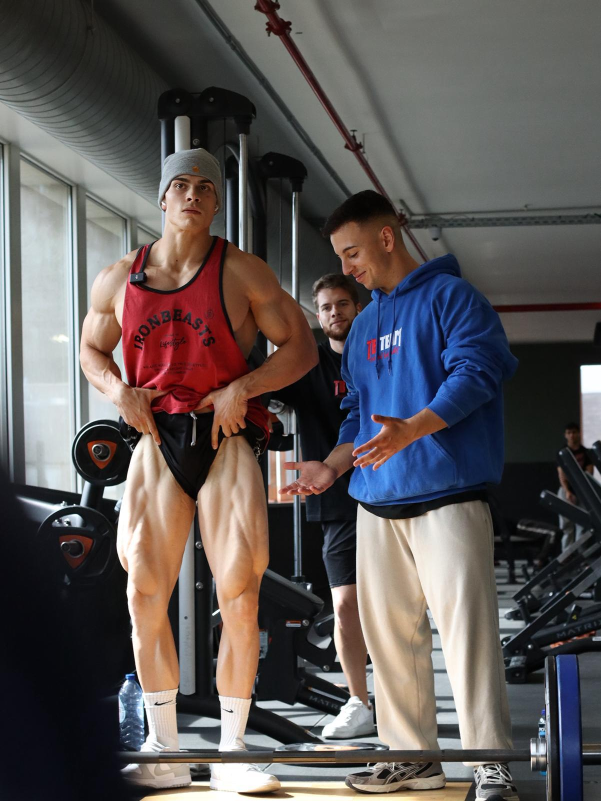
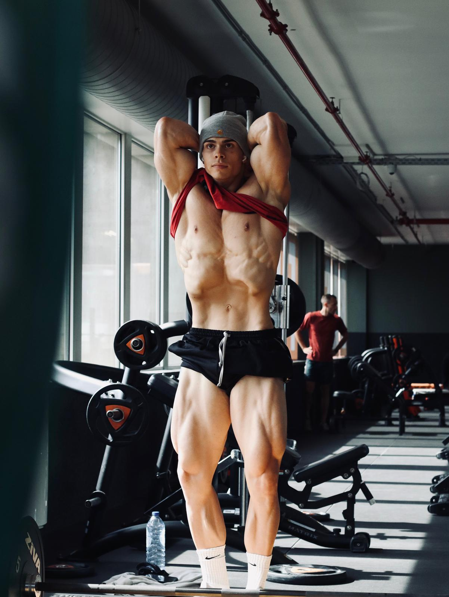
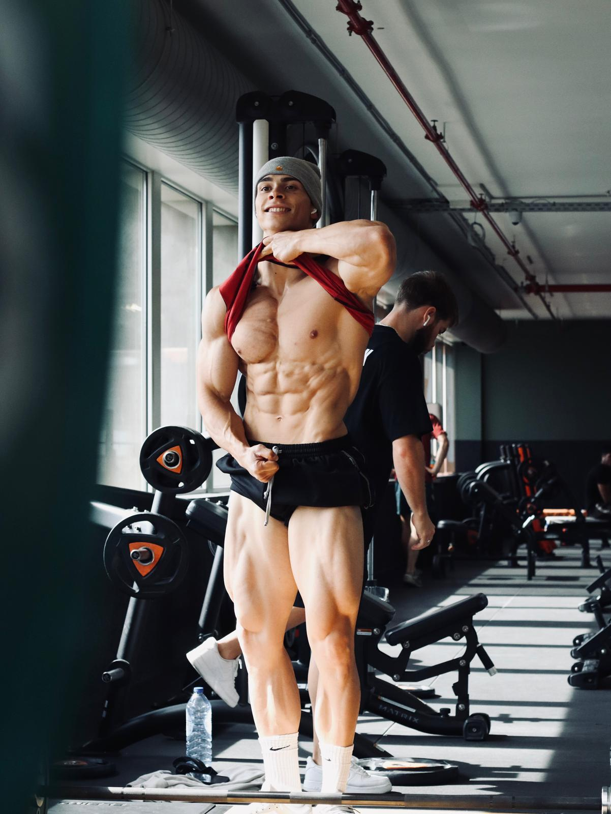
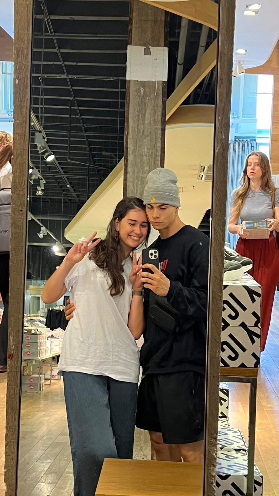
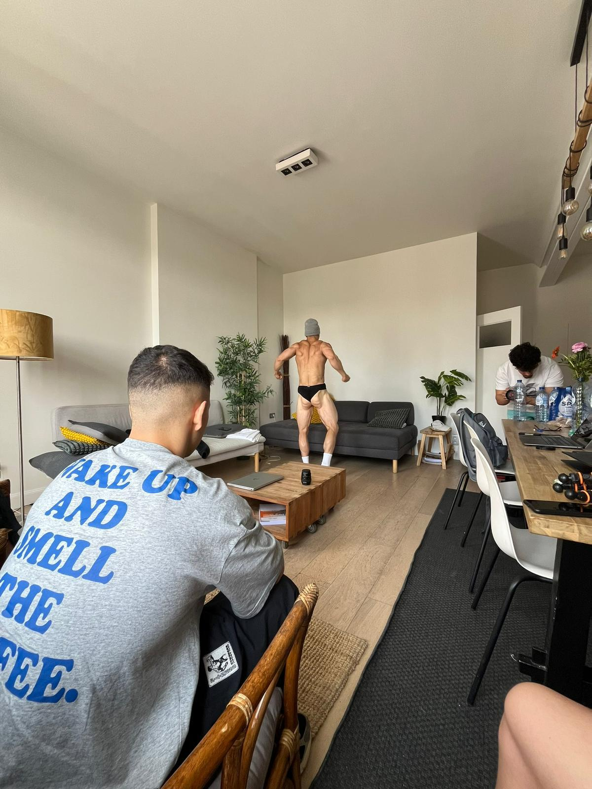
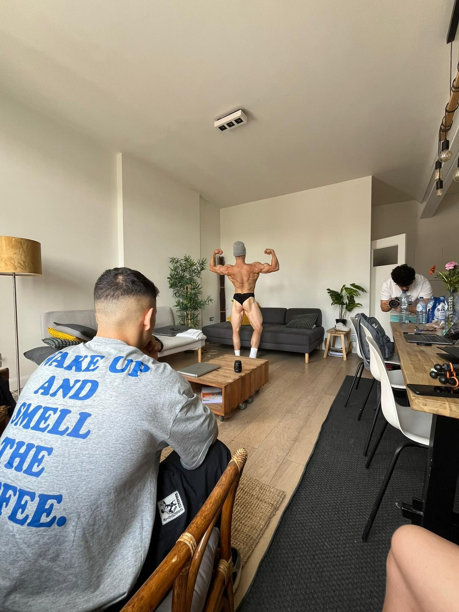
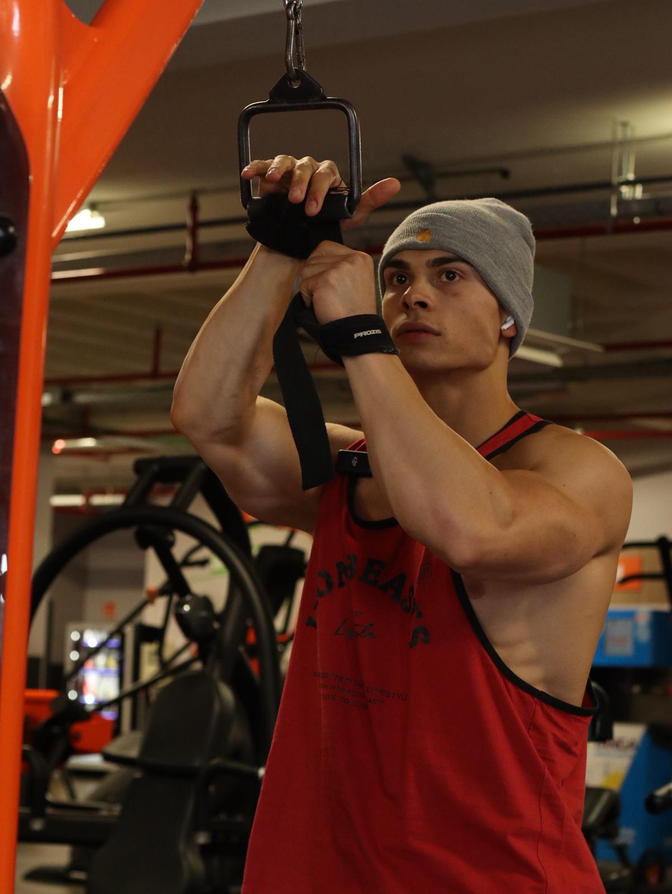